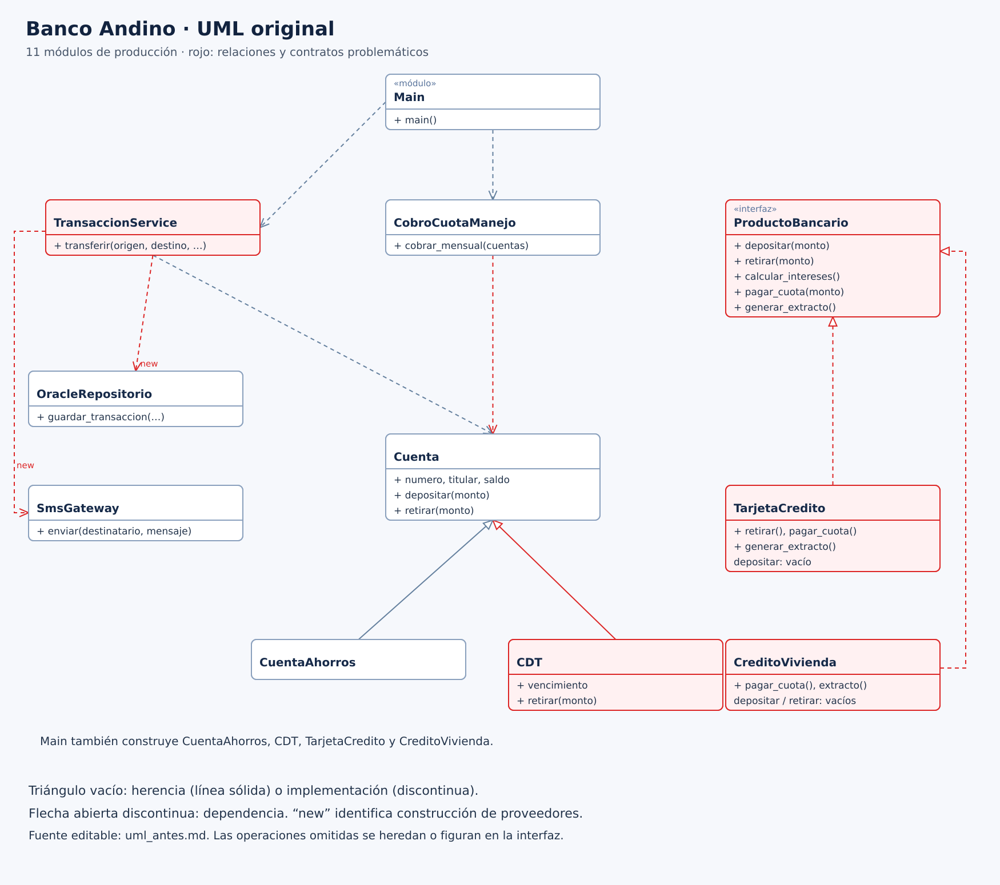
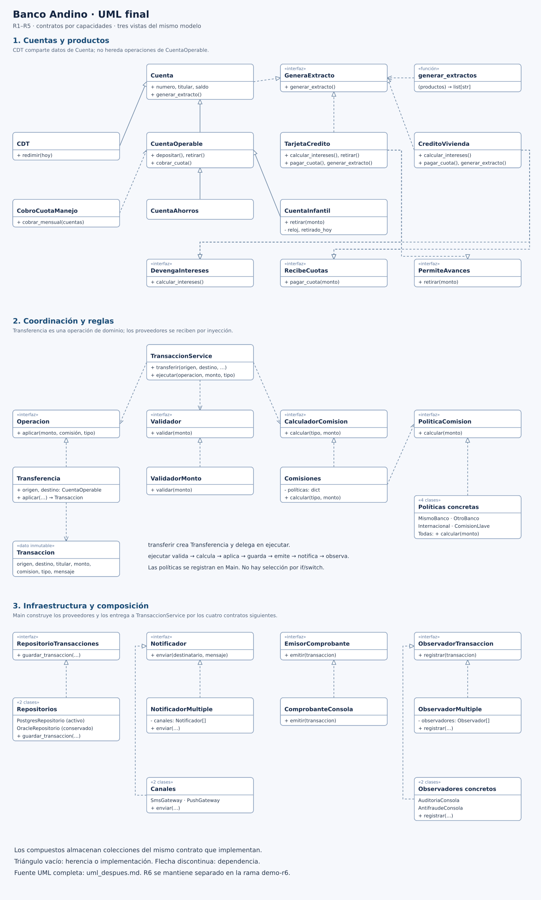

Haga clic en un diagrama para abrirlo a tamaño completo. Los archivos Markdown contienen las relaciones UML detalladas.
Responsabilidades mezcladas y contratos incompatibles.

Capacidades separadas, políticas y proveedores intercambiables.
